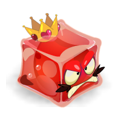
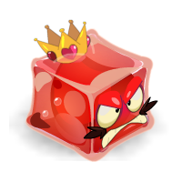

Tutoriel


Guide d’optimisation de l’ordre des quêtes
Ce guide a été conçu dans l'optique de réaliser l'intégralité des quêtes du jeu en ne faisant qu'une fois (quand c'est possible) chaque donjon.
Code couleur :
Ici se trouve une version "light" de ce guide, avec seulement les quêtes pour les Dofus et Tours du monde.
Niveau 1
Niveau 40
Bonta / Brâkmar : Alignement 1-10
Château d’Amakna et Port de Madrestam
Niveau 50
Bonta / Brâkmar : Alignement 11-12
Vert émeraude 1 (Dofus Emeraude)
Ile d’Otomaï : Plage de Corail
Archipel de Valonia : Futaie enneigée (Dofus Sylvestre)
Niveau 60
Bonta / Brâkmar : Alignement 13-18
Ile de Moon : Plage de la Tortue et Forêt des Masques (Dokoko)
Ile des wabbits 1 (Dofus Cawotte)
Bonta / Brâkmar : Ordre I et Alignement 19-21
Niveau 70
Montagne des craqueleurs et Plaines rocheuses
Montagne des Koalaks : Territoire des Dragodindes Sauvages, Lacs Enchantés et Forêt de Kaliptus
Plaines de Cania : Caniablanca
Landes de Sidimotes : Cimetière des Torturés et Désolation de Sidimotes
Niveau 80
Saharach : Dunes des ossements
Ile des Wabbits 2 (Dofus Cawotte)
Être plus royaliste que le roi
Niveau 90
Ile de Moon : Chemin du Crâne (Dokoko)
Landes de Sidimotes : Route des Roulottes
Forêt des Abraknydes (Dofus Sylvestre)
Niveau 100
Odyssée en trois dimensions (Dofus des Veilleurs)
Ile de Pandala : Village de Pandala (Domakuro)
Bonta / Brâkmar : Alignement 34-39
Ile de Moon : Jungle Interdite (Dokoko)
Bleu turquoise 1 (Dofus Turquoise)
Montagne des Koalaks : Canyon sauvage
Vert émeraude 2 (Dofus Emeraude)
Niveau 110
Brâkmar : Entrailles de Brâkmar
Ile de Pandala : Plantala (Domakuro)
Ecaflipus : Pierres de l’élévation
Plaines de Cania : Pénates du Corbac et Bois de Litneg
Niveau 120
Ile de Frigost : La Bourgade et Champs de Glace (DDG)
Bonta / Brâkmar : Alignement 42-54
Plaines de Cania : Cirque et Lac de Cania (Dotruche)
Ile d’Otomaï : Plaines herbeuses, Tourbières sans fond et Tourbière nauséabonde
Pourpre profond 1 (Dofus Pourpre)
Montagne des Koalaks : Cimetière Primitif et Vallée de la Morh’Kitu (Dofus Kaliptus)
Xélorium, Chemins d’hier (Dofus Nébuleux)
Niveau 130
Ile de Frigost : Forêt des pins perdus(DDG)
Srambad : Ruelles des Eaux-Suaires (Dofus Nébuleux)
Saharach : Territoire Cacterre
Ile de Pandala : Terrdala et Akwadala (Domakuro)
Pourpre profond 2 (Dofus Pourpre)
Niveau 140
Bonta / Brâkmar : Ordre III et Alignement 56-60
Bleu turquoise 2 (Dofus Turquoise)
Ile de Frigost : Lac Gelé et Berceau d'Alma (DDG)
Ile de Pandala : Feudala et Aerdala (Domakuro)
Niveau 150
Bleu turquoise 3 (Dofus Turquoise)
Plaines de Cania : Landes de Cania
Bonta / Brâkmar : Alignement 61-69
Niveau 160
Ile d’Otomaï : Village de la Canopée, Tronc et Feuillage de l’arbre Hakam
Ile de Frigost : Larmes d’Ouronigride (DDG)
Enutrosor : Carrière Aurifère (Dofus Nébuleux)
Plaines de Cania : Dents de Pierre (Krosmoglob)
Ile de Grobe : Cimetière de Grobe (Dorigami)
Niveau 170
Ile de Frigost : Crevasse Perge et Caverne des Givrefoux (DDG)
Ile de Grobe : Mont des Tombeaux (Dorigami)
Xélorium : Jour présent (Dofus Nébuleux)
Bonta / Brâkmar : Alignement 71-80
Saharach : Gorge des Vents Hurlants
Niveau 180
Landes de Sidimotes : Gisgoul, Domaine et Caverne des Fungus
Ile de Frigost : Village Enseveli et Forêt Pétrifiée (DDG)
Bleu turquoise 4 (Dofus Turquoise)
Srambad : Catacombes (Dofus Nébuleux)
Niveau 190
Ile de Frigost : Crocs de verre (DDG)
Bonta / Brâkmar : Alignement 86-89
Ile de Frigost : Mont Torrideau et Ruche des Gloursons (DDG)
Niveau 200
Rêves de dragons 1 (Dofus Vulbis)
Ile de Frigost : Château de Harebourg 1 (DDG)
Bonta / Brâkmar : Alignement 90-100
Ile de Frigost : Château de Harebourg 2 (DDG)
Profondeurs de Sufokia : Trithon (Dofus Abyssal)
Ile d’Otomaï : La fin de l’éternité
Ivoire
Ile de Frigost : Roc des Salbatroces
Enutrosor : Retraite des Éternels (Dofus Nébuleux)
Saharach : Citée Oubliée et Pyramide Maudite
Profondeurs de Sufokia : Ruines sous-marines (Dofus Abyssal)
Landes de Sidimotes : Terres Désacrées
Ebène
La fratrie des oubliés (Dofus Forgelave)
Tours de la fratrie : Épaves Silencieuses (Dofus Forgelave)
Profondeurs de Sufokia : R’lyugluglu (Dofus Abyssal)
Ile de Frigost : Royaume de Martegel
Srambad : Hauts Ténébreux (Dofus Nébuleux)
Tours de la fratrie : Marches Magmatiques (Dofus Forgelave)
Six sur Six
Xélorium : Lendemains incertains (Dofus Nébuleux)
Je rêvais d’un autre monde (Dofus Nébuleux)
Eliocalypse
Rêves de dragons 2 (Dofus Vulbis)
Eliocalypse (Dofus du Cauchemar)
Wukin et Wukang (Dofus Tacheté)
Atoll des Possédés et Cauchemar des Ravageurs (Dofus du Cauchemar)
Archipel de Valonia : Ereboria et Ephedrya (Dofus Sylvestre)


 
